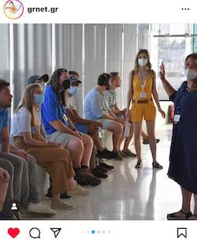
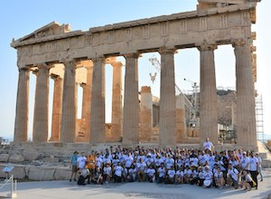
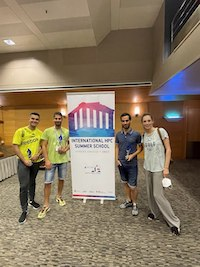
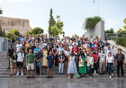

<!-- phd.html -->
        <link rel="stylesheet" href="css/bootstrap.min.css">
        <link rel="stylesheet" href="css/bootstrap-theme.min.css">
        <link rel="stylesheet" href="css/fontAwesome.css">
        <link rel="stylesheet" href="css/light-box.css">
        <link rel="stylesheet" href="css/owl-carousel.css">
        <link rel="stylesheet" href="css/templatemo-style.css">
        <link rel="apple-touch-icon" href="apple-touch-icon.png">
        <meta charset="utf-8">
        <meta http-equiv="X-UA-Compatible" content="IE=edge,chrome=1">

<section id="phd" class="three">
 <div class="container">
       <section id="atmospheric-science" class="skills-section">
         <div class="container">
           <header>
             <h3>Atmospheric Science Skills</h3>
           </header>
<br>
<br>
           <ul style="text-align: left;">
             <li>CMAQ
               <span style="font-size: 0.9em;">Community Multiscale Air Quality Modeling System
               (CMAQ) is a widely used atmospheric model developed by the United States
               Environmental Protection Agency (EPA) for simulating air quality and
               atmospheric chemistry. It helps analyze the impacts of emissions on air
               quality and assesses the effectiveness of pollution control strategies.</span>
               <details>
                <summary>To learn more click here to expand</summary>             
                 <br>
                  Here are some CMAQ results:
                   <div class="thumbnails">
                   <a href="images/img0.jpg" class="image"></a>
                   <a href="images/img1.jpg" class="image"></a>
                   <a href="images/img2.jpg" class="image"></a>
                   <a href="images/img3.jpg" class="image"></a>
                   <a href="images/img4.jpg" class="image"></a>
             </div>
             </details>
              <li>MCIP</li>
              <span style="font-size: 0.9em;">Model Coupling and Initialization Processor(MCIP) is a
               preprocessor for the Community Multiscale Air Quality Modeling System (CMAQ),
               used to prepare meteorological data for input into CMAQ simulations. It
               performs tasks such as data interpolation, domain mapping, and time
               synchronization, ensuring that the meteorological data are properly formatted
               and compatible with CMAQ requirements.</span>

              <li>WRF</li>
               <span style="font-size: 0.9em;">Weather Research and
                Forecasting Model(WRF) is a next-generation numerical weather prediction system
                designed to simulate atmospheric processes at various spatial and temporal
                scales. It is widely used for weather forecasting, climate research, and
                atmospheric science studies. WRF offers advanced capabilities for modeling
                complex meteorological phenomena, including atmospheric dynamics, cloud physics
                , and land surface interactions.</span>
                                                           <li>Linux and Bash</li>
                                                                    <span style="font-size: 0.9em;">I possess a strong command of Linux operating
                                                                     systems and Bash scripting. With extensive hands-on experience, I am adept
                                                                     at navigating and managing Linux environments, including file systems,
                                                                     permissions, and system configurations. My expertise extends to writing Bash
                                                                     scripts to automate tasks, streamline workflows, and enhance system efficiency
                                                                     . Whether it's writing complex scripts or troubleshooting system issues, I
                                                                     leverage my Linux and Bash skills to deliver effective solutions in diverse
                                                                     environments.</span>

                                                           <li>High-Performance Computing</li>
                                                                    <span style="font-size: 0.9em;">I have extensive experience in leveraging
                                                                     multiprocessing and parallel computing techniques on HPC clusters for
                                                                     atmospheric research during my Ph.D. Utilizing sophisticated parallelization
                                                                     strategies, I efficiently distributed computational tasks across multiple core
                                                                     s and nodes within the cluster, significantly enhancing computational
                                                                     performance. Through this hands-on experience, I have acquired robust skills
                                                                     in maximizing cluster resources and accelerating complex simulations for
                                                                     atmospheric science applications.</span>
                                                                  <details>
                                                                  <summary> Click here to see more</summary>
                                                                  <br>
                                                                  In 2022 I had the chance to be one of a few Canadian students who could participate in the HPC summerschool in Athenes, Greece. This one-week learning opportunity was funded by Digital Reseach Alliance of Canada for the Canadian participents. Over a week of workshops and hands-on sessions about different aspects of High-Performance Computing software and hardware, we got to meet with the professors, mentors and students from different fields of research from USA, EU, Japan, Canada and learn from them!
Below you can see the highlights of this trip:
                                                                  <div class="thumbnails">
                                                                  <a href="images/meingreece01.jpg" class="image"></a>
                                                                  <a href="images/meinmuseumathens.jpeg" class="image"></a>
                                                                  <a href="images/Acro01.jpeg" class="image"></a>
                                                                  <a href="images/meingreece02.jpeg" class="image"></a>
                                                                  <a href="images/athenspell.jpeg" class="image"></a>
                                                                  </div>
                                                               </details>
                                        </div>
                                        </section>


<!-- Add more details here -->
                        </details>
                    </li>
                </ul>
            </div>
        </section>
    </div>
</section>


